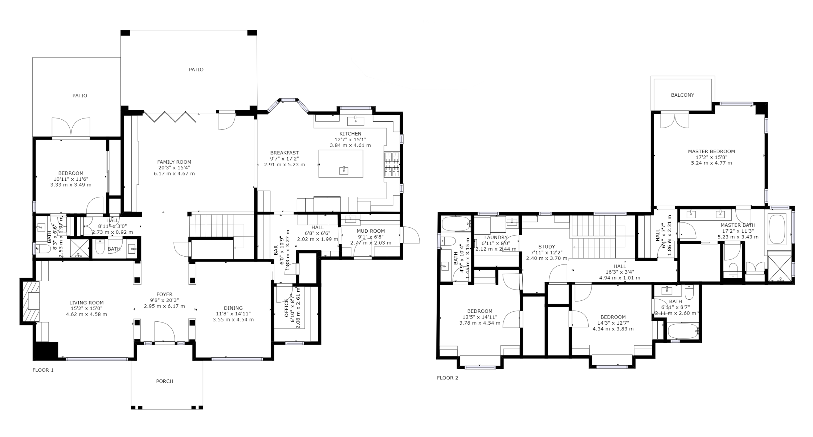
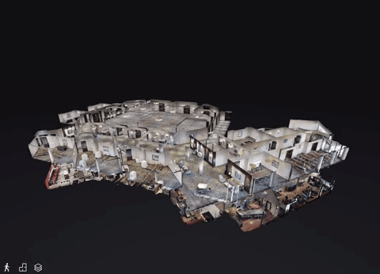

Vloerplannen (Floorplans)
Heldere 2D- en 3D-vloerplannen op basis van je Matterport Pro3 3D-scan. Beschikbaar als extra service na aankoop van een 3D-scan.

Waarom vloerplannen via Snap360?
Professionele plannen die je ruimte duidelijk presenteren. Ze kunnen enkel besteld worden in combinatie met een Matterport Pro3 3D-scan, zodat maatvoering en nauwkeurigheid gegarandeerd zijn.
Nauwkeurige maatvoering
Afmetingen en oppervlaktes op basis van je Pro3-scan.
Handige exports
2D (PNG/PDF) en optioneel CAD-/DXF-exports op aanvraag.
Snel geleverd
Korte doorlooptijd en duidelijke oplevering.
Voor woning & bedrijf
Van residentieel tot industrieel vastgoed.
Praktijkvoorbeeld
Een voorbeeldvloerplan op basis van een Matterport Pro3 3D-scan.